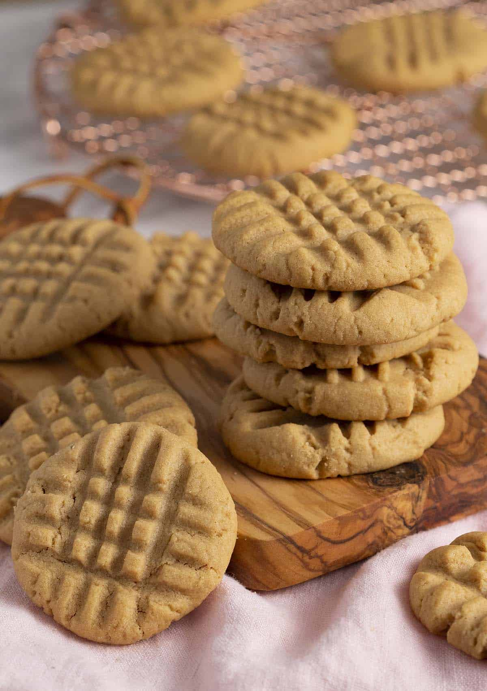

Home
Peanut Butter Cookies

Description
A nostalgia trip to my aunt's house.
You're sure to enjoy these quick and easy peanut butter cookies!
Ingredients
- 1½ cups Flour
- ¾ tsp Baking Powder
- ½ cup Sugar
- ½ cup Brown Sugar
- ½cup Butter
- 1 cup Peanut Butter
- 1 tsp Vanilla Extract
- 1 large egg
- Optional: ½ tsp of Salt (depending on saltiness of PB)
Steps
- Preheat oven to 350°F
- Mix flour and baking powder then set aside
- In a separate bowl, mix butter and sugars until incorporated.
- Mix in peanut butter until incorporated.
- Mix in egg and vanilla extract (about 30 sec)
- Mix in flour/baking powder mix (about 3 min)
- Roll dough into balls
- Lightly salt baking sheet
- Place ball and flatten with fork
- Bake for about 10 min
- Take cookies out of the oven. Allow them to sit and cool